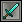

Conectar con MMOItems
La conexión es simple: creas el item en CraftEngine y, en MMOItems, seleccionas ese item
model usando el mismo namespace:ID.
1. Crea el item en CraftEngine
Primero debe existir el item y su modelo. Por ejemplo:
items:
custom_tiers:mi_espada:
material: diamond_sword
template:
- custom_tiers:tiers
arguments:
type: model_path
tiers: 3
display: rare
model_path: minecraft:item/diamond_swordRecarga y comprueba que el item se puede dar:
/ce reload all
/ce item get custom_tiers:mi_espada2. Selecciona el item model en MMOItems
En la configuración del item de MMOItems, selecciona el item model de CraftEngine. Lo único
importante es que el namespace:ID sea exactamente el mismo:

item_model: custom_tiers:mi_espada
custom_tierses el namespace del pack.mi_espadaes el ID del item que creaste.
3. Escribe el tier
El fondo se muestra cuando el item tiene MMOITEMS_TIER con un valor que coincida
con uno de los tiers configurados. Puedes:
- Dejar un tier fijo con
displayen CraftEngine, o hacer que MMOItems escribaMMOITEMS_TIER
KATANA:
base:
material: DIAMOND_SWORD
name: '&fKatana'
item_model: custom_tiers:mi_espada # IMPORTANTE
modifiers:
critical_strike_group:
min: 1
max: 1
modifiers: # Es importante añadir los modifiers o caso
mod_common: # contrario no habrá rarezas.
chance: 0.4
stats:
tier: COMMON
critical-strike-chance: 5
mod_uncommon:
chance: 0.3
stats:
tier: UNCOMMON
critical-strike-chance: 10
mod_rare:
chance: 0.3
stats:
tier: RARE
critical-strike-chance: 15
El ID debe coincidir
Verifica que tu item model sea correcto antes de solicitar ayuda.
Siguiente: ejemplos de armas.